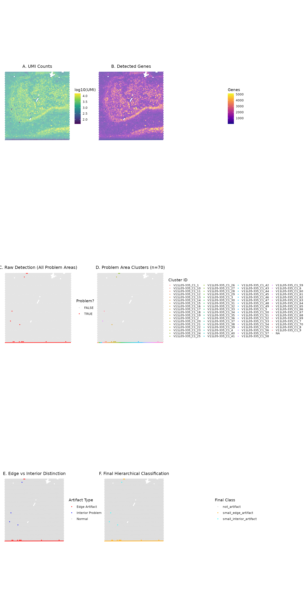
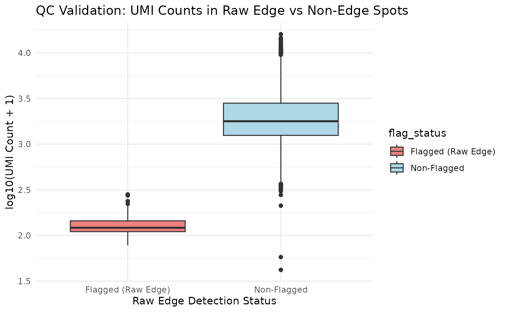
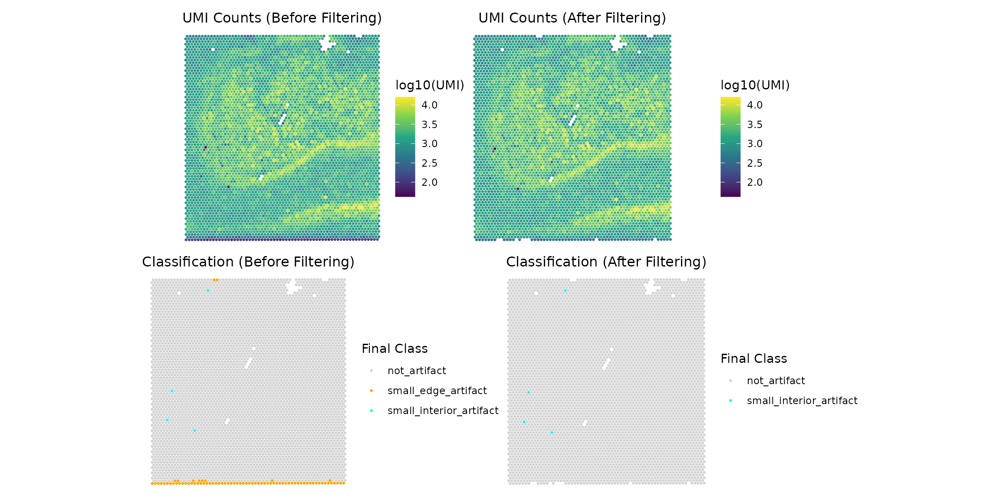

vignettes/hippocampus-edge-detection.Rmd
hippocampus-edge-detection.RmdThe SpatialDryArtifacts R package provides a robust, two-step workflow to identify, classify, and handle spatial artifacts in spatial transcriptomics data from multiple platforms including 10x Visium (standard and HD).
These artifacts, often appearing as areas of low gene/UMI counts or high mitochondrial ratio at tissue edges (edge artifacts) or in the interior (interior artifacts), can negatively impact downstream analyses. This guide demonstrates how to use the package on real-world datasets across different spatial transcriptomics platforms.
SpatialDryArtifacts is designed to work across multiple spatial transcriptomics platforms:
The morphological detection framework automatically adapts to different grid arrangements, but parameter scaling is critical for optimal performance across platforms.
The core philosophy is a two-step process: Detect, then
Classify.
This separates the sensitive task of identifying all potential problem
spots from the more nuanced task of deciding what to do with them.
detectEdgeArtifacts() — The Detection
Phase
Goal: Cast a wide net and identify all spots that could potentially be part of an artifact.
How does it work:
sum_gene) using a Median Absolute
Deviation (MAD) threshold.focal_transformations():
my_fill): Fills spots
completely surrounded by outliersmy_outline): Fills spots
outlined by outliers in a larger 16-pixel perimetermy_fill_star): Fills
spots with outliers in all four cardinal directions (N, S, E, W)min_cluster_size threshold (default: 40
spots)problemAreas).clumpEdges(). For each of the
four borders (north, south, east, west), calculates the proportion of
boundary spots belonging to each cluster. A cluster is classified as an
edge artifact if this proportion meets or exceeds
edge_threshold (default: 0.75, meaning ≥75% border
coverage) on any single border direction.spe object: _edge,
_problem_id, and _problem_size.classifyEdgeArtifacts() — The Decision
Phase
Goal: Take the raw detections from Step 1 and apply a clear, hierarchical logic to assign final labels.
How does it work: - Input: Requires
the spe object processed by
detectEdgeArtifacts().
- Hierarchical Classification: Applies a 2×2 logic
system based on Location and Size: 1.
Location: Is the artifact an
_edge_artifact (TRUE or FALSE)
based on the detection step?
2. Size: Is the artifact’s _problem_size
larger than min_spots (default: 20)?
- Label Assignment: This logic produces five intuitive
categories: - "not_artifact" — High-quality spots
- "large_edge_artifact" — Large artifact cluster
(> min_spots) touching the tissue edge
- "small_edge_artifact" — Small artifact cluster
(≤ min_spots) touching the tissue edge
- "large_interior_artifact" — Large artifact cluster
(> min_spots) located inside the tissue
- "small_interior_artifact" — Small artifact cluster
(≤ min_spots) located inside the tissue
- Key Outputs: Adds one final, intuitive classification
column: _classification.
Tuning parameters lets you adapt the workflow to different tissue types, data quality, and spatial transcriptomics platforms. The package uses a wrapper function that routes to platform-specific implementations.
CRITICAL FIRST STEP: Specify your platform using the
platform parameter in
detectEdgeArtifacts():
| Platform | Function Call | Required Parameters |
|---|---|---|
| Standard Visium | detectEdgeArtifacts(spe, platform="visium", ...) |
shifted (usually TRUE) |
| VisiumHD | detectEdgeArtifacts(spe, platform="visiumhd", resolution="16um", ...) |
resolution (“8um” or “16um”) |
Example calls:
# Standard Visium (55µm hexagonal grid)
spe <- detectEdgeArtifacts(spe, platform = "visium", shifted = TRUE, ...)
# VisiumHD 16µm (square grid)
spe <- detectEdgeArtifacts(spe, platform = "visiumhd", resolution = "16um", ...)
# VisiumHD 8µm (square grid)
spe <- detectEdgeArtifacts(spe, platform = "visiumhd", resolution = "8um", ...)detectEdgeArtifacts() Parameters
The wrapper function accepts platform-specific parameters that are routed to the appropriate implementation.
platform (REQUIRED) –
Character string: "visium" or "visiumhd" (case
insensitive)
qc_metric (Default:
"sum_gene") – Column name for QC metric used in outlier
detection
"sum_umi",
"detected", "nFeature"
samples (Default: "sample_id")
– Column name for sample identifiers
mad_threshold (Default: 3) – Sensitivity
for detecting outliers
name (Default:
"edge_artifact") – Prefix for output column names
[name]_edge, [name]_problem_id,
[name]_problem_size
verbose (Default: TRUE) –
Print progress messages
keep_intermediate (Default:
FALSE) – Retain intermediate outlier detection
columns
(Used when platform = "visium")
edge_threshold (Default: 0.75) – Minimum
proportion of a tissue boundary that must be occupied by outlier
clusters (collectively) for those clusters to be classified as edge
artifacts.
Important Behavior: The threshold is applied to the
total coverage of all outlier clusters on each boundary
direction (North, South, East, West). If multiple clusters collectively
cover ≥ edge_threshold of a boundary, all clusters
touching that boundary are classified as edge artifacts, even
if no single cluster meets the threshold individually.
Example Scenario:
Rationale: Edge drying artifacts typically affect large, continuous regions along tissue boundaries. Multiple clusters on the same boundary often result from a single underlying technical failure (incomplete permeabilization) and should be treated as a unified artifact rather than independent events.
Tuning Guidance:
min_cluster_size (Default: 40) – Minimum
cluster size (in spots) for morphological cleaning during focal
transformation steps
shifted (Default: FALSE) –
Apply coordinate adjustment for hexagonal grid alignment
shifted = TRUE when using array coordinates from
Space Ranger.FALSE if using pre-transformed pixel coordinates
or for VisiumHD square grids.batch_var (Default: "both") –
Determines grouping for MAD calculation
"sample_id", "slide", or
"both"
"both": Spots flagged as outliers if below threshold in
either sample or slide grouping(Used when platform = "visiumhd")
resolution (REQUIRED) –
Character string: "8um" or "16um"
buffer_width_um (Default: 80) – Buffer zone
width in micrometers (physical units)
resolution:
min_cluster_area_um2 (Default: 1280) – Minimum
cluster area in square micrometers (physical units)
resolution:
col_x and col_y
(Default: "array_col", "array_row") – Column
names for bin coordinates
Key Difference from Visium: VisiumHD parameters are specified in physical units (µm, µm²) rather than bin counts. This ensures consistency across resolutions while the algorithm handles the bin conversion internally.
classifyEdgeArtifacts()
Parameters
The classification step is platform-independent but requires appropriate parameter scaling.
min_spots (Default: 20) – CRITICAL
PARAMETER: Threshold (in number of spots/bins) to distinguish
"large" from "small" artifacts
Platform-Specific Scaling Required:
This parameter must be adjusted based on spatial resolution to represent equivalent physical artifact sizes:
| Platform | Recommended min_spots
|
Physical Area | Scaling Factor |
|---|---|---|---|
| Standard Visium (55µm) | 20-40 |
~0.06-0.12 mm² | Baseline (1×) |
| VisiumHD 16µm bins | 100-200 |
~0.026-0.051 mm² | ~6-10× Visium |
| VisiumHD 8µm bins | 400-800 |
~0.026-0.051 mm² | ~20-40× Visium |
Automatic Scaling Formula:
min_spots_HD <- min_spots_visium × (55 / bin_size_µm)²
# Example: For min_spots = 30 on Standard Visium
# VisiumHD 16µm: 30 × (55/16)² ≈ 354 bins
# VisiumHD 8µm: 30 × (55/8)² ≈ 1,420 binsWhy scaling matters: The same physical artifact (e.g., 0.1 mm² edge dryspot) will cover:
Without scaling, large VisiumHD artifacts would be incorrectly classified as “small.”
qc_metric (Default: "sum_umi")
– QC metric column for validation (must exist but not directly used in
classification logic)
samples (Default: "sample_id")
– Sample ID column name
exclude_slides (Default: NULL)
– Vector of slide IDs to exclude from edge classification
FALSE
name (Default:
"edge_artifact") – Must match the name used in
detectEdgeArtifacts()
| Feature | Standard Visium | VisiumHD |
|---|---|---|
| Grid Type | Hexagonal | Square |
Requires shifted? |
Yes (TRUE) |
No (not used) |
| Resolution Parameter | Not applicable |
Required ("8um" or
"16um") |
| Edge Detection Method | Morphological + boundary coverage | Buffer zone + morphological |
| Parameter Units | Spot counts | Physical units (µm, µm²) |
Default min_spots (classify) |
20-40 | 100-200 (16µm), 400-800 (8µm) |
| Typical Dataset Size | ~5,000 spots | ~480k bins (16µm), ~1.9M bins (8µm) |
After both functions, several columns are added to
colData(spe):
*_edge – Raw detection: Is the spot in
a cluster touching the tissue border? (TRUE/FALSE)*_problem_id – Raw detection: ID of
the problem area.*_problem_size – Raw detection: Size
(number of spots) of the problem area.*_true_edges — Intermediate: Edge
status after applying exclude_slides (used by
classifyEdgeArtifacts()).*_classification — Final
classification: One of "not_artifact",
"large_edge_artifact", "small_edge_artifact",
"large_interior_artifact", or
"small_interior_artifact".This package includes spe_vignette, a lightweight
SpatialExperiment object derived from a human hippocampus
Visium sample.
This vignette will load this raw-like object and run the full
SpatialDryArtifacts workflow on it live.
Note: To meet package size requirements (< 5MB), this object has been subset (e.g., to coding genes) and sparsified, but no artifact detection has been run. We will perform those steps now.
The underlying spatial clustering functions in this package currently
require a dense matrix to perform coordinate-based
calculations. We must first convert the sparse counts assay
in our spe_vignette object to a standard (dense)
matrix.
data(spe_vignette)
cat("Loaded data dimensions:", dim(spe_vignette), "\n")
#> Loaded data dimensions: 12971 4965
assay(spe_vignette, "counts") <- as.matrix(assay(spe_vignette, "counts"))
names(colData(spe_vignette))[names(colData(spe_vignette)) == "sum"] <- "sum_umi"
spe_detected <- detectEdgeArtifacts(
spe_vignette,
platform = "visium", # IMPORTANT: Specify Standard Visium platform
qc_metric = "sum_umi",
samples = "sample_id",
shifted = TRUE, # Hexagonal grid coordinate adjustment
batch_var = "sample_id",
mad_threshold = 3,
edge_threshold = 0.75,
name = "edge_artifact"
)
#> Detecting edges...
#> Sample V11L05-335_C1: 74 edge spots detected
#> Finding problem areas...
#> Removed intermediate columns: lg10_sum_umi, sum_umi_3MAD_outlier_sample, sum_umi_3MAD_outlier_binary
#> Edge artifact detection completed!
#> Total edge spots: 74
#> Total problem area spots: 78
cat("\n=== RESULTS ===\n")
#>
#> === RESULTS ===
table(Edge_Detected = spe_detected$edge_artifact_edge)
#> Edge_Detected
#> FALSE TRUE
#> 4891 74
# Classification with Standard Visium parameters
spe_classified <- classifyEdgeArtifacts(
spe_detected,
min_spots = 20,
name = "edge_artifact"
)
#> Classifying artifacts spots...
#> Classification added: edge_artifact_classification
#>
#> Classification summary:
#> not_artifact: 4887 spots
#> small_edge_artifact: 74 spots
#> small_interior_artifact: 4 spots
cat("\n=== Classification Results ===\n")
#>
#> === Classification Results ===
table(spe_classified$edge_artifact_classification)
#>
#> not_artifact small_edge_artifact small_interior_artifact
#> 4887 74 4For VisiumHD data, the workflow is identical except for parameter scaling. Here’s a complete example showing how to adapt parameters for VisiumHD:
# This is a pseudo-example demonstrating VisiumHD 16µm workflow
# Assumes you have loaded a VisiumHD SpatialExperiment object as 'spe_hd16'
# Step 1: Ensure required QC metrics are calculated
library(scuttle)
spe_hd16 <- addPerCellQCMetrics(spe_hd16)
# Step 2: Detection Phase - VisiumHD uses square grid (no 'shifted' needed)
spe_hd16_detected <- detectEdgeArtifacts(
spe_hd16,
platform = "visiumhd", # Specify VisiumHD platform
resolution = "16um", # REQUIRED for VisiumHD
qc_metric = "sum_umi", # or "sum" depending on your colData
samples = "sample_id",
buffer_width_um = 100, # VisiumHD-specific parameter
mad_threshold = 2.5,
edge_threshold = 0.75,
name = "edge_artifact"
)
# Step 3: Classification Phase - CRITICAL: Scale min_spots for VisiumHD resolution
# For 16µm bins, use ~6-10× the Standard Visium threshold
min_spots_16um <- 30 * (55/16)^2 # ≈ 354 bins
spe_hd16_classified <- classifyEdgeArtifacts(
spe_hd16_detected,
qc_metric = "sum_umi",
min_spots = round(min_spots_16um), # ~350 bins
name = "edge_artifact"
)
# Visualization (same approach as Standard Visium)
table(spe_hd16_classified$edge_artifact_classification)
# This is a pseudo-example demonstrating VisiumHD 8µm workflow
# Assumes you have loaded a VisiumHD 8µm SpatialExperiment object as 'spe_hd8'
# Step 1: QC metrics
spe_hd8 <- addPerCellQCMetrics(spe_hd8)
# Step 2: Detection Phase
spe_hd8_detected <- detectEdgeArtifacts(
spe_hd8,
platform = "visiumhd", # Specify VisiumHD platform
resolution = "8um", # REQUIRED: Specify 8µm resolution
qc_metric = "sum_umi",
samples = "sample_id",
buffer_width_um = 100, # Buffer zone in micrometers
mad_threshold = 2.5,
edge_threshold = 0.75,
name = "edge_artifact"
)
# Step 3: Classification with 8µm-appropriate threshold
# For 8µm bins, use ~20-40× the Standard Visium threshold
min_spots_8um <- 30 * (55/8)^2 # ≈ 1,420 bins
spe_hd8_classified <- classifyEdgeArtifacts(
spe_hd8_detected,
qc_metric = "sum_umi",
min_spots = round(min_spots_8um), # ~1,400 bins
name = "edge_artifact"
)
table(spe_hd8_classified$edge_artifact_classification)Platform-Specific Function Calls:
| Platform | Function Call | Required Parameters |
|---|---|---|
| Standard Visium | detectEdgeArtifacts(..., platform="visium") |
shifted=TRUE |
| VisiumHD 16µm | detectEdgeArtifacts(..., platform="visiumhd", resolution="16um") |
resolution |
| VisiumHD 8µm | detectEdgeArtifacts(..., platform="visiumhd", resolution="8um") |
resolution |
Parameter Recommendations by Platform:
| Parameter | Standard Visium | VisiumHD 16µm | VisiumHD 8µm |
|---|---|---|---|
platform |
"visium" |
"visiumhd" |
"visiumhd" |
resolution |
N/A (not used) | "16um" |
"8um" |
shifted |
TRUE |
N/A (handled internally) | N/A |
buffer_width_um |
N/A |
100 (default) |
100 (default) |
mad_threshold |
1.5-3.0 | 2.0-3.0 | 2.0-3.0 |
min_spots (classify) |
20-40 | 100-200 | 400-800 |
| Grid Type | Hexagonal | Square | Square |
We’ll create a comprehensive visualization showing QC metrics, detection results, and detailed cluster information:
library(SpatialExperiment)
library(patchwork)
plot_data <- as.data.frame(colData(spe_classified))
plot_data <- cbind(plot_data, as.data.frame(spatialCoords(spe_classified)))
plot_data_in_tissue <- plot_data[plot_data$in_tissue, ]
base_theme <- theme_void() +
theme(plot.title = element_text(size = 12, hjust = 0.5),
legend.position = "right")
# Plot 1: UMI Counts
p1 <- ggplot(plot_data_in_tissue, aes(x = pxl_col_in_fullres, y = pxl_row_in_fullres,
color = log10(sum_umi + 1))) +
geom_point(size = 0.5) +
scale_color_viridis_c(name = "log10(UMI)") +
ggtitle("A. UMI Counts") +
base_theme +
coord_fixed()
# Plot 2: Detected Genes
if ("detected" %in% names(plot_data_in_tissue)) {
p2 <- ggplot(plot_data_in_tissue, aes(x = pxl_col_in_fullres, y = pxl_row_in_fullres,
color = detected)) +
geom_point(size = 0.5) +
scale_color_viridis_c(name = "Genes", option = "plasma") +
ggtitle("B. Detected Genes") +
base_theme +
coord_fixed()
} else {
p2 <- ggplot() + theme_void() + ggtitle("B. Detected Genes (Data N/A)")
}
# Plot 3: Raw Detection (Any Problem Area)
if ("edge_artifact_problem_id" %in% names(plot_data_in_tissue)) {
p3 <- ggplot(plot_data_in_tissue, aes(x = pxl_col_in_fullres, y = pxl_row_in_fullres,
color = !is.na(edge_artifact_problem_id))) +
geom_point(size = 0.5) +
scale_color_manual(values = c("FALSE" = "lightgray", "TRUE" = "red"),
name = "Problem?") +
ggtitle("C. Raw Detection (All Problem Areas)") +
base_theme +
coord_fixed()
} else {
p3 <- ggplot() + theme_void() + ggtitle("C. Raw Detection (Data N/A)")
}
# Plot 4: Cluster IDs
if ("edge_artifact_problem_id" %in% names(plot_data_in_tissue)) {
plot_data_in_tissue$cluster_display <- NA
has_cluster <- !is.na(plot_data_in_tissue$edge_artifact_problem_id)
plot_data_in_tissue$cluster_display[has_cluster] <-
plot_data_in_tissue$edge_artifact_problem_id[has_cluster]
n_clusters <- length(unique(plot_data_in_tissue$cluster_display[has_cluster]))
p4 <- ggplot(plot_data_in_tissue, aes(x = pxl_col_in_fullres, y = pxl_row_in_fullres,
color = cluster_display)) +
geom_point(size = 0.5) +
scale_color_discrete(name = "Cluster ID", na.value = "lightgray") +
ggtitle(paste0("D. Problem Area Clusters (n=", n_clusters, ")")) +
base_theme +
coord_fixed() +
theme(legend.key.size = unit(0.3, "cm"),
legend.text = element_text(size = 8))
} else {
p4 <- ggplot() + theme_void() + ggtitle("D. Cluster IDs (Data N/A)")
}
# Plot 5: Edge vs Interior Separation
if ("edge_artifact_edge" %in% names(plot_data_in_tissue)) {
plot_data_in_tissue$artifact_type <- "Normal"
# Mark edge artifacts
plot_data_in_tissue$artifact_type[plot_data_in_tissue$edge_artifact_edge] <- "Edge Artifact"
# Mark interior problem areas (not edges)
interior_mask <- !is.na(plot_data_in_tissue$edge_artifact_problem_id) &
!plot_data_in_tissue$edge_artifact_edge
plot_data_in_tissue$artifact_type[interior_mask] <- "Interior Problem"
p5 <- ggplot(plot_data_in_tissue, aes(x = pxl_col_in_fullres, y = pxl_row_in_fullres,
color = artifact_type)) +
geom_point(size = 0.5) +
scale_color_manual(
values = c("Normal" = "lightgray",
"Edge Artifact" = "red",
"Interior Problem" = "blue"),
name = "Artifact Type"
) +
ggtitle("E. Edge vs Interior Distinction") +
base_theme +
coord_fixed()
} else {
p5 <- ggplot() + theme_void() + ggtitle("E. Edge vs Interior (Data N/A)")
}
# Plot 6: Final Hierarchical Classification
if ("edge_artifact_classification" %in% names(plot_data_in_tissue)) {
p6 <- ggplot(plot_data_in_tissue, aes(x = pxl_col_in_fullres, y = pxl_row_in_fullres,
color = edge_artifact_classification)) +
geom_point(size = 0.5) +
scale_color_manual(
values = c("not_artifact" = "lightgray",
"large_edge_artifact" = "red",
"small_edge_artifact" = "orange",
"large_interior_artifact" = "blue",
"small_interior_artifact" = "cyan"),
name = "Final Class",
na.value = "grey50"
) +
ggtitle("F. Final Hierarchical Classification") +
base_theme +
coord_fixed()
} else {
p6 <- ggplot() + theme_void() + ggtitle("F. Final Classification (Data N/A)")
}
# Combine all plots in a 3x2 layout
(p1 | p2) / (p3 | p4) / (p5 | p6)
Let’s examine the enhanced classification system:
cat("--- Final Classification Summary (`edge_artifact_classification`) ---\n")
#> --- Final Classification Summary (`edge_artifact_classification`) ---
# Use the 'spe_classified' object we created in the step above
final_summary <- table(spe_classified$edge_artifact_classification)
print(final_summary)
#>
#> not_artifact small_edge_artifact small_interior_artifact
#> 4887 74 4
final_pct <- round(100 * final_summary / sum(final_summary), 2)
final_df <- data.frame(
Classification = names(final_summary),
Count = as.numeric(final_summary),
Percentage = as.numeric(final_pct)
)
print(final_df)
#> Classification Count Percentage
#> 1 not_artifact 4887 98.43
#> 2 small_edge_artifact 74 1.49
#> 3 small_interior_artifact 4 0.08
cat("\n\n")
cat("--- Raw Edge Detection Summary (`edge_artifact_edge`) ---\n")
#> --- Raw Edge Detection Summary (`edge_artifact_edge`) ---
# Use the 'spe_classified' object and the new column name
edge_summary <- table(spe_classified$edge_artifact_edge)
print(edge_summary)
#>
#> FALSE TRUE
#> 4891 74
edge_pct <- round(100 * edge_summary / sum(edge_summary), 2)
edge_df <- data.frame(
Flagged_As_Edge = names(edge_summary),
Count = as.numeric(edge_summary),
Percentage = as.numeric(edge_pct)
)
print(edge_df)
#> Flagged_As_Edge Count Percentage
#> 1 FALSE 4891 98.51
#> 2 TRUE 74 1.49Finally, let’s validate that flagged spots have lower quality metrics:
in_tissue_data <- spe_classified[, spe_classified$in_tissue]
qc_data <- data.frame(
sum_umi = in_tissue_data$sum_umi,
detected_genes = in_tissue_data$detected,
flagged = in_tissue_data$edge_artifact_edge
)
# --- Calculate Median Differences ---
flagged_umi <- median(qc_data$sum_umi[qc_data$flagged], na.rm = TRUE)
nonflagged_umi <- median(qc_data$sum_umi[!qc_data$flagged], na.rm = TRUE)
flagged_gene <- median(qc_data$detected_genes[qc_data$flagged], na.rm = TRUE)
nonflagged_gene <- median(qc_data$detected_genes[!qc_data$flagged], na.rm = TRUE)
cat("QC Validation Results (comparing raw edge detection flag):\n")
#> QC Validation Results (comparing raw edge detection flag):
cat("Flagged spots - Median UMI:", round(flagged_umi), "\n")
#> Flagged spots - Median UMI: 120
cat("Non-flagged spots - Median UMI:", round(nonflagged_umi), "\n")
#> Non-flagged spots - Median UMI: 1784
cat("UMI difference:", round(nonflagged_umi - flagged_umi), "\n\n")
#> UMI difference: 1664
cat("Flagged spots - Median Detected Genes:", round(flagged_gene), "\n")
#> Flagged spots - Median Detected Genes: 106
cat("Non-flagged spots - Median Detected Genes:", round(nonflagged_gene), "\n")
#> Non-flagged spots - Median Detected Genes: 1019
cat("Gene difference:", round(nonflagged_gene - flagged_gene), "\n")
#> Gene difference: 912
qc_data$flag_status <- ifelse(qc_data$flagged, "Flagged (Raw Edge)", "Non-Flagged")
validation_plot <- ggplot(qc_data, aes(x = flag_status, y = log10(sum_umi + 1), fill = flag_status)) +
geom_boxplot() +
scale_fill_manual(values = c("Flagged (Raw Edge)" = "lightcoral", "Non-Flagged" = "lightblue")) +
labs(
title = "QC Validation: UMI Counts in Raw Edge vs Non-Edge Spots",
x = "Raw Edge Detection Status", y = "log10(UMI Count + 1)"
) +
theme_minimal()
print(validation_plot)
Based on the new classifications, users can make informed decisions about filtering. For example, you might decide to remove all edge artifacts (both large and small) while keeping interior artifacts for further review.
Here’s how you can filter the SpatialExperiment object
to remove all spots classified as both
"large_edge_artifact" or
"small_edge_artifact":
if ("edge_artifact_classification" %in% names(colData(spe_classified))) {
spots_to_keep <- !spe_classified$edge_artifact_classification %in%
c("large_edge_artifact", "small_edge_artifact")
spe_filtered <- spe_classified[, spots_to_keep]
cat("Original number of spots:", ncol(spe_classified), "\n")
cat("Number of spots after filtering:", ncol(spe_filtered), "\n")
} else {
cat("Classification column not found. Filtering step skipped.\n")
}
#> Original number of spots: 4965
#> Number of spots after filtering: 4891
plot_data_before <- as.data.frame(colData(spe_classified))
coords_mat <- spatialCoords(spe_classified)
plot_data_before <- cbind(plot_data_before, as.data.frame(coords_mat))
plot_data_before_in_tissue <- plot_data_before[plot_data_before$in_tissue, ]
plot_data_after <- as.data.frame(colData(spe_filtered))
if (ncol(spe_filtered) > 0) {
coords_mat_after <- spatialCoords(spe_filtered)
plot_data_after <- cbind(plot_data_after, as.data.frame(coords_mat_after))
}
base_theme <- theme_void() +
theme(plot.title = element_text(size = 12, hjust = 0.5),
legend.position = "right")
p1_umi_before <- ggplot(plot_data_before_in_tissue, aes(x = pxl_col_in_fullres, y = pxl_row_in_fullres, color = log10(sum_umi + 1))) +
geom_point(size = 0.5) +
scale_color_viridis_c(name = "log10(UMI)") +
ggtitle("UMI Counts (Before Filtering)") +
base_theme +
coord_fixed()
if (ncol(spe_filtered) > 0) {
p2_umi_after <- ggplot(plot_data_after, aes(x = pxl_col_in_fullres, y = pxl_row_in_fullres, color = log10(sum_umi + 1))) +
geom_point(size = 0.5) +
scale_color_viridis_c(name = "log10(UMI)") +
ggtitle("UMI Counts (After Filtering)") +
base_theme +
coord_fixed()
} else {
p2_umi_after <- ggplot() + theme_void() + ggtitle("UMI Counts (After Filtering - No Spots)")
}
p3_class_before <- ggplot(plot_data_before_in_tissue, aes(x = pxl_col_in_fullres, y = pxl_row_in_fullres, color = edge_artifact_classification)) +
geom_point(size = 0.5) +
scale_color_manual(
values = c("not_artifact" = "lightgray",
"large_edge_artifact" = "red",
"small_edge_artifact" = "orange",
"large_interior_artifact" = "blue",
"small_interior_artifact" = "cyan"),
name = "Final Class",
na.value="grey50",
drop = FALSE
) +
ggtitle("Classification (Before Filtering)") +
base_theme +
coord_fixed()
if (ncol(spe_filtered) > 0) {
p4_class_after <- ggplot(plot_data_after, aes(x = pxl_col_in_fullres, y = pxl_row_in_fullres, color = edge_artifact_classification)) +
geom_point(size = 0.5) +
scale_color_manual(
values = c("not_artifact" = "lightgray",
"large_edge_artifact" = "red",
"small_edge_artifact" = "orange",
"large_interior_artifact" = "blue",
"small_interior_artifact" = "cyan"),
name = "Final Class",
na.value="grey50",
drop = FALSE
) +
ggtitle("Classification (After Filtering)") +
base_theme +
coord_fixed()
} else {
p4_class_after <- ggplot() + theme_void() + ggtitle("Classification (After Filtering - No Spots)")
}
combined_filtering_plot_2x2 <- (p1_umi_before | p2_umi_after) / (p3_class_before | p4_class_after)
print(combined_filtering_plot_2x2)
This vignette demonstrated the SpatialDryArtifacts workflow across multiple spatial transcriptomics platforms. Specifically, it showed:
Key Takeaways for Multi-Platform Usage:
Grid Structure: Standard Visium uses hexagonal
grids (shifted = TRUE), while VisiumHD uses square grids
(shifted = FALSE)
Critical Parameter Scaling: The
min_spots threshold in classifyEdgeArtifacts()
must scale with spatial resolution:
min_spots_HD = min_spots_visium × (55 / bin_size)²
Morphological Framework: The same detection logic works across platforms, automatically adapting to different grid arrangements
Physical Consistency: Scaled parameters ensure that “large” and “small” artifact classifications represent equivalent physical sizes regardless of platform
Overall, SpatialDryArtifacts provides a unified, platform-agnostic framework for detecting and classifying spatial artifacts, enabling consistent quality control across the evolving spatial transcriptomics technology landscape.
sessionInfo()
#> R Under development (unstable) (2026-02-09 r89390)
#> Platform: x86_64-conda-linux-gnu
#> Running under: Rocky Linux 9.4 (Blue Onyx)
#>
#> Matrix products: default
#> BLAS: /jhpce/shared/community/core/conda_R/devel/R/lib64/R/lib/libRblas.so
#> LAPACK: /jhpce/shared/community/core/conda_R/devel/R/lib64/R/lib/libRlapack.so; LAPACK version 3.12.1
#>
#> locale:
#> [1] LC_CTYPE=en_US.UTF-8 LC_NUMERIC=C
#> [3] LC_TIME=en_US.UTF-8 LC_COLLATE=en_US.UTF-8
#> [5] LC_MONETARY=en_US.UTF-8 LC_MESSAGES=en_US.UTF-8
#> [7] LC_PAPER=en_US.UTF-8 LC_NAME=C
#> [9] LC_ADDRESS=C LC_TELEPHONE=C
#> [11] LC_MEASUREMENT=en_US.UTF-8 LC_IDENTIFICATION=C
#>
#> time zone: US/Eastern
#> tzcode source: system (glibc)
#>
#> attached base packages:
#> [1] stats4 stats graphics grDevices utils datasets methods
#> [8] base
#>
#> other attached packages:
#> [1] dplyr_1.2.0 patchwork_1.3.2
#> [3] ggplot2_4.0.1 SpatialDryArtifacts_0.99.0
#> [5] SpatialExperiment_1.21.0 SingleCellExperiment_1.33.0
#> [7] SummarizedExperiment_1.41.1 Biobase_2.71.0
#> [9] GenomicRanges_1.63.1 Seqinfo_1.1.0
#> [11] IRanges_2.45.0 S4Vectors_0.49.0
#> [13] BiocGenerics_0.57.0 generics_0.1.4
#> [15] MatrixGenerics_1.23.0 matrixStats_1.5.0
#>
#> loaded via a namespace (and not attached):
#> [1] gtable_0.3.6 rjson_0.2.23 xfun_0.55
#> [4] bslib_0.10.0 htmlwidgets_1.6.4 lattice_0.22-9
#> [7] vctrs_0.7.1 tools_4.6.0 parallel_4.6.0
#> [10] tibble_3.3.1 pkgconfig_2.0.3 Matrix_1.7-4
#> [13] RColorBrewer_1.1-3 S7_0.2.1 desc_1.4.3
#> [16] lifecycle_1.0.5 compiler_4.6.0 farver_2.1.2
#> [19] textshaping_1.0.4 terra_1.8-86 codetools_0.2-20
#> [22] htmltools_0.5.9 sass_0.4.10 yaml_2.3.12
#> [25] pkgdown_2.2.0 pillar_1.11.1 jquerylib_0.1.4
#> [28] BiocParallel_1.45.0 DelayedArray_0.37.0 cachem_1.1.0
#> [31] magick_2.9.0 abind_1.4-8 tidyselect_1.2.1
#> [34] digest_0.6.39 labeling_0.4.3 fastmap_1.2.0
#> [37] grid_4.6.0 cli_3.6.5 SparseArray_1.11.10
#> [40] magrittr_2.0.4 S4Arrays_1.11.1 dichromat_2.0-0.1
#> [43] withr_3.0.2 scales_1.4.0 rmarkdown_2.30
#> [46] XVector_0.51.0 otel_0.2.0 ragg_1.5.0
#> [49] beachmat_2.27.2 evaluate_1.0.5 knitr_1.51
#> [52] viridisLite_0.4.3 rlang_1.1.7 Rcpp_1.1.1
#> [55] glue_1.8.0 scuttle_1.21.0 jsonlite_2.0.0
#> [58] R6_2.6.1 systemfonts_1.3.1 fs_1.6.6